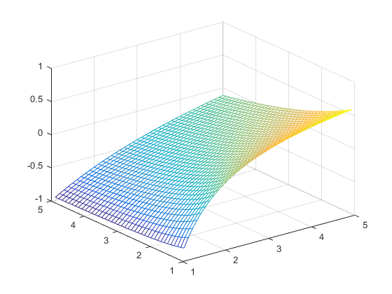
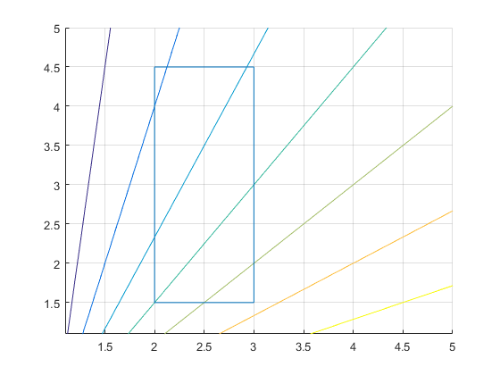

Laboratorium #6. Teoria optymalizacji.
Adam Gryczka
27.03.2017
Contents
Program do minimalizacji funkcji liniowo ułamkowej
Poniżej zostało przedstawione rozwiązanie problemu minimalizacji funkcji liniowo-ułamkowej. W całkowitym rozwiązaniu zawarto rozwiązanie zadania minimalizacji na cztery różne sposoby: graficznie poprzez wyrysowanie w przestrzeni 3D wykresu funkcji za pomocą funkcji mesh, graficznie poprzez wykorzystanie funkcji contour, analitycznie poprzez przekształcenie problemu liniowo-ułamkowego do problemu liniowego oraz analitycznie porzez przekształcenie do problemu quasi-wypukłego.
Funkcja mesh
Rozwiązanie pierwsze: rysujemy funkcję w przestrzeni 3D:
Funkcja contour
Rozwiązanie metodą drugą: narysowanie jedynie konturu funkcji w przestrzeni 2D wraz z uwzględnieniem ograniczeń:
Rozwiązanie problemu jako zadania programowania liniowego
--
Rozwiązanie problemu jako zadania quasi-wypukłego
--